AnyPortrait > 메뉴얼 > 타임라인과 연동하기
타임라인과 연동하기
1.1.6
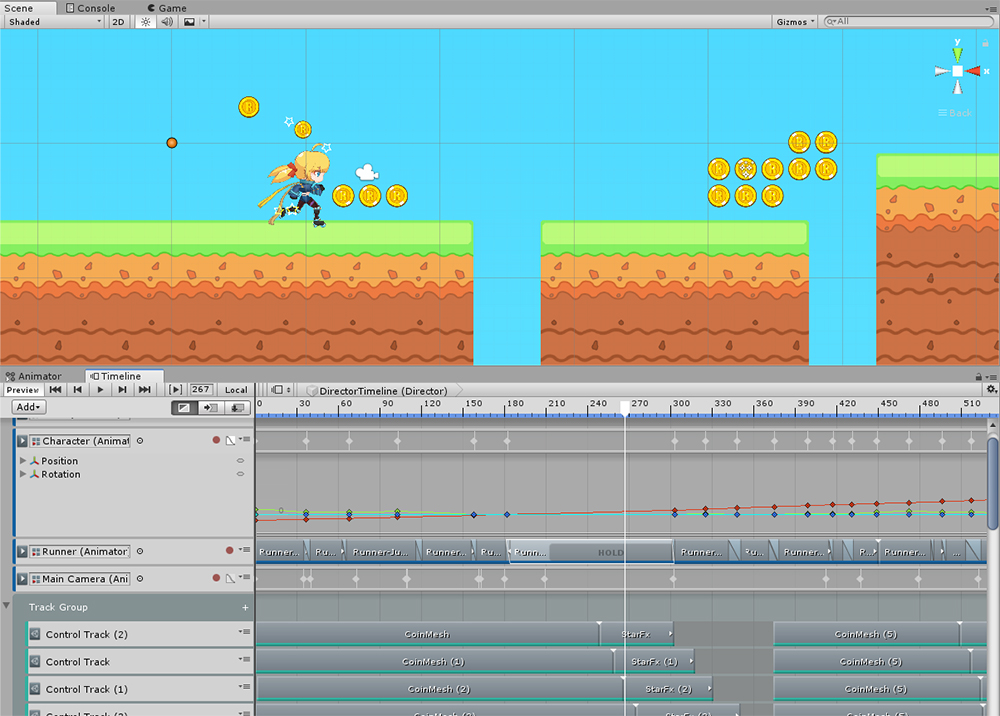
유니티의 타임라인(Timeline)은 게임 중에 재생되는 시네마틱 화면을 만드는 기능입니다.
기존의 애니메이션과 다른 시퀸스 툴을 이용하여 애니메이션을 조합하고 제어할 수 있습니다.
유니티의 홈페이지에서 타임라인에 관한 설명을 볼 수 있습니다. (관련 페이지)
AnyPortrait는 v1.1.6부터 유니티의 타임라인과 연동하는 기능을 제공합니다.
Playable Director와 Timeline Asset 만들고 트랙 연결하기
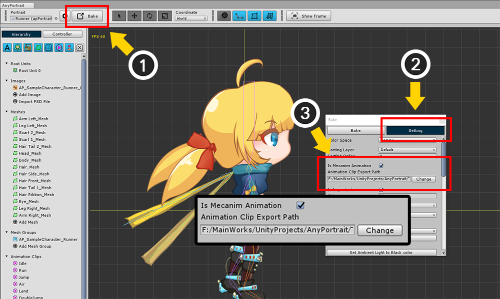
타임라인은 메카님과 관련이 있는 기능입니다.
따라서 AnyPortrait의 메카님 설정을 켜야 합니다.
(1) Bake 버튼을 누릅니다.
(2) Setting 탭을 선택합니다.
(3) 메카님 설정을 켜고 애니메이션 클립이 저장될 경로를 설정합니다.
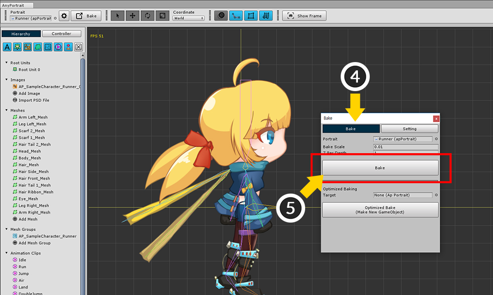
(4) Bake 탭을 선택합니다.
(5) Bake 버튼을 누릅니다.
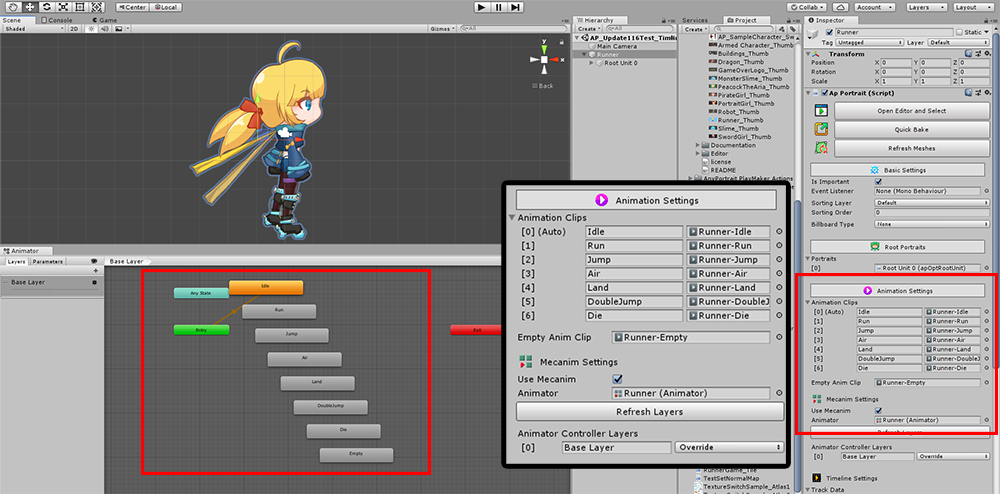
캐릭터에 Animator가 추가된 것을 볼 수 있습니다.
또한 애니메이션 클립들이 생성된 상태입니다.
이 애니메이션 클립들을 이용하여 타임라인을 구성할 수 있습니다.
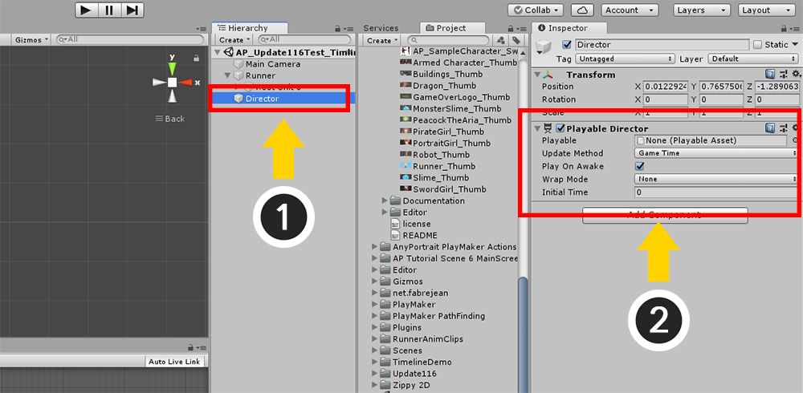
타임라인을 만들어봅시다.
(1) 새로운 GameObject를 생성합니다. 여기서는 "Director"라는 이름으로 생성했습니다.
(2) 생성된 GameObject에 Playable Director 컴포넌트를 추가합니다.
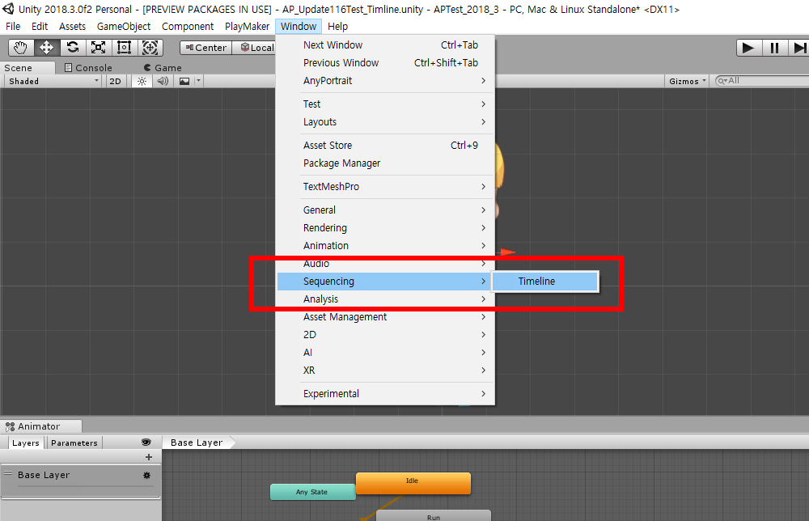
Window > Sequencing > Timeline 메뉴로 타임라인 에디터를 엽니다.
(유니티 버전에 따라 메뉴가 다를 수 있습니다.)
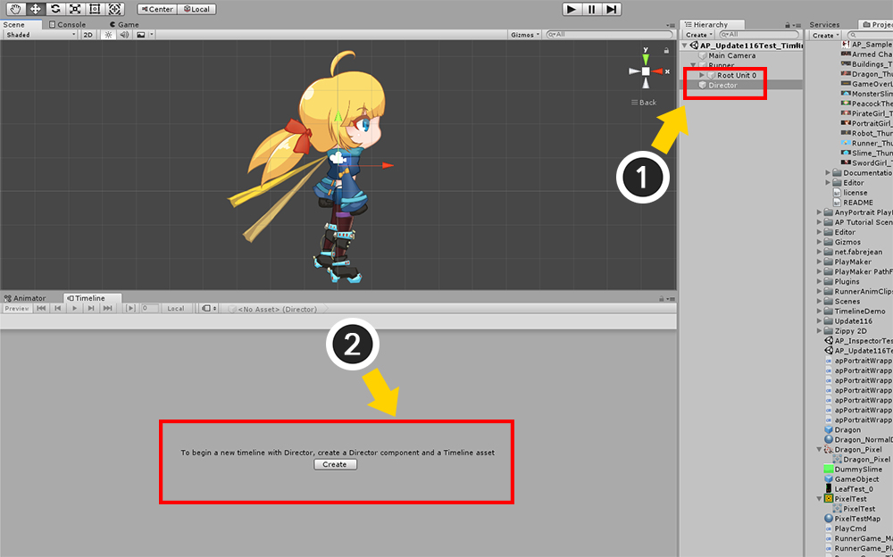
타임라인 에디터가 열렸습니다.
(1) Playable Director 컴포넌트가 추가된 Director를 선택합니다.
(2) 타임라인 에디터에서 Create 버튼을 눌러서 Timeline Asset을 생성합니다.
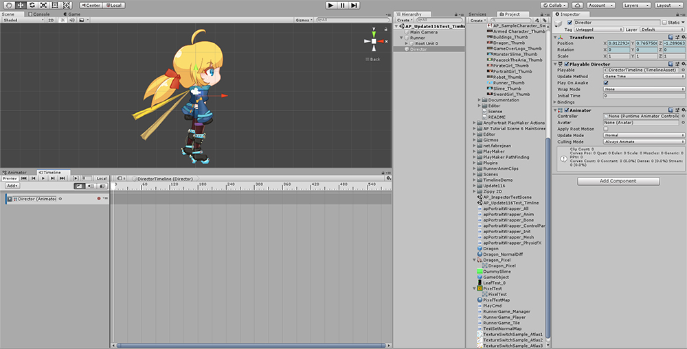
Timeline Asset이 생성되어 이제 타임라인을 편집할 준비가 되었습니다.
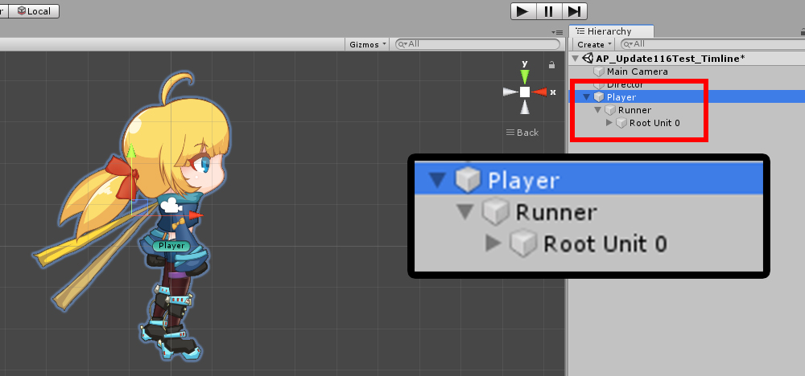
AnyPortrait로 제작된 캐릭터(Runner)가 다른 GameObject(Player)의 자식 객체가 되도록 만듭니다.
메카님을 연동하는 경우 로컬 좌표가 (0, 0, 0)으로 강제되기 때문에 이렇게 별도의 GameObject를 만드는 것이 좋습니다.
타임라인 연동시에도 별도의 부모 GameObject를 만들고, 부모 GameObject의 Transform을 제어하는 것을 권장합니다.
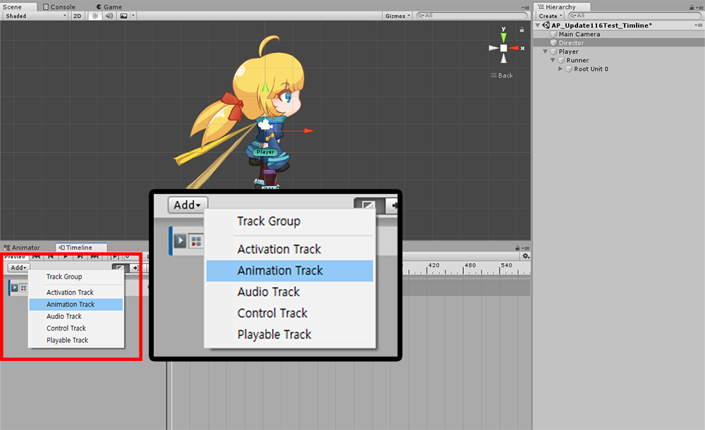
타임라인 에디터에서 Add 버튼을 누르고 Animation Track을 추가합니다.
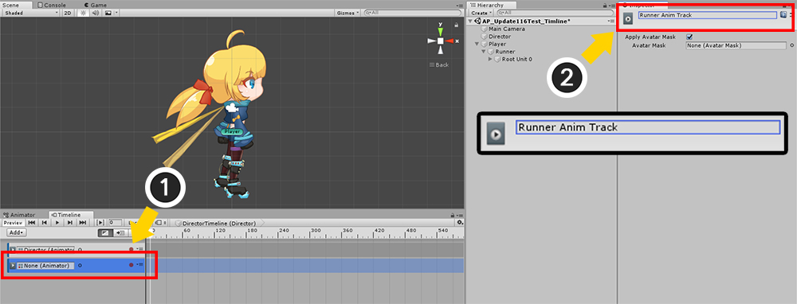
추가된 트랙을 AnyPortrait와 연동해봅시다.
(1) AnyPortrait의 캐릭터와 연동될 트랙을 선택합니다.
(2) 트랙의 이름을 지정합니다. 여기서는 "Runner Anim Track"으로 설정했습니다.
AnyPortrait는 "트랙의 이름"으로 연동될 트랙을 구분하므로, 이때 설정한 이름을 기억해둡시다.
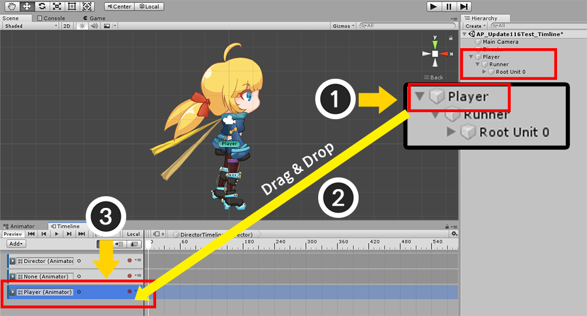
이번엔 캐릭터를 움직이는 트랙을 만들어봅시다.
(1) 앞서 만든 캐릭터의 부모 GameObject인 "Player"를 (2) 타임라인의 트랙 리스트로 드래그&드롭합니다.
(3) Player에 대한 트랙이 추가되었습니다.
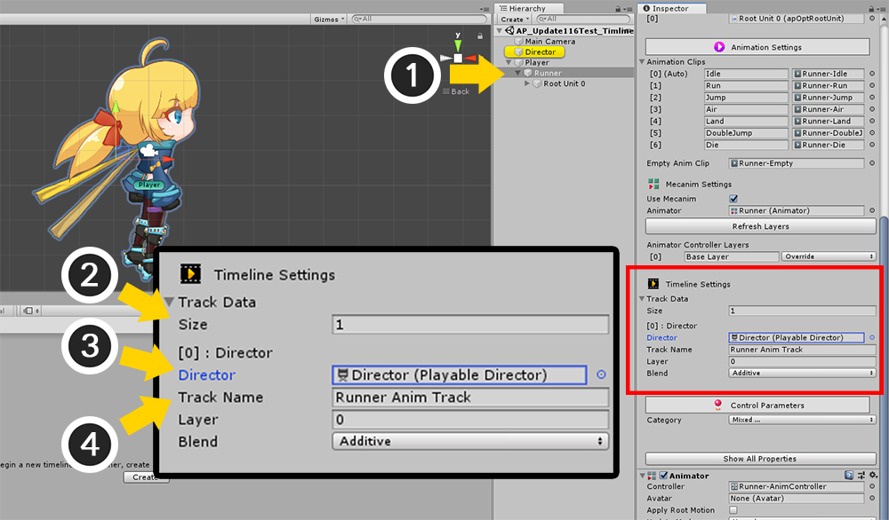
(1) AnyPortrait 캐릭터를 선택합니다.
(2) Inspector 화면에서 Timeline Settings 항목의 Track Data의 Size를 1로 설정합니다.
(3) Director 항목에 Playable Director가 있는 Director를 연결합니다.
(4) Track Name 항목에 앞서 만든 트랙의 이름("Runner Anim Track")을 지정합니다.
타임라인의 트랙과의 연동 설정에 관하여
Inspector 화면에서 타임라인의 트랙과 연동할 수 있으며, 이때 다음의 특징이 있습니다.
1) 다중 레이어
동일한 Playable Director에 2개 이상의 트랙을 연결하면 여러 개의 애니메이션 레이어가 지정된 것과 동일합니다.
Layer와 Blend의 값을 변경하여 다중 레이어의 혼합 순서와 방식을 설정할 수 있습니다.
2) 다수의 Playable Director 지정
씬에 여러 개의 Playable Director가 있다면, Track Data에 모두 추가하면 됩니다.
현재 재생되는 Playable Director에 대해서만 자동으로 연동이 됩니다.
만약 모든 Playable Director의 재생이 완료된다면 AnyPortrait의 캐릭터는 타임라인 대신 메카님의 Animator의 제어를 받습니다.
3) 스크립트로 Track Data 추가하거나 제거하기
스크립트를 이용하여 게임이 실행되는 중에 Playable Director와 연결할 수 있습니다.
v1.1.6부터 제공되는 다음의 함수들을 이용해보시길 바랍니다.
(자세한 설명은 관련 페이지를 참고하세요.)
public bool AddTimelineTrack( UnityEngine.Playables.PlayableDirector playableDirector, string trackName, int layer, apAnimPlayUnit.BLEND_METHOD blendMethod)
: Playable Director의 트랙과 연결합니다.
트랙의 이름과 레이어 정보를 입력해야하며, 유효한 트랙이 아닌 경우 false를 리턴합니다.
public void RemoveInvalidTimelineTracks()
: 유효하지 않은 모든 트랙 정보를 삭제합니다.
public void RemoveAllTimelineTracks()
: 모든 트랙 정보를 삭제합니다.
public void UnlinkTimelinePlayableDirector(UnityEngine.Playables.PlayableDirector playableDirector)
: 입력된 Playable Director와의 연결을 해제합니다.
public void SetTimelineEnable(bool isEnabled)
: 트랙 정보와 상관없이 타임라인의 제어를 받을지 여부를 설정합니다.
애니메이션 클립 배치하고 캐릭터 움직이기
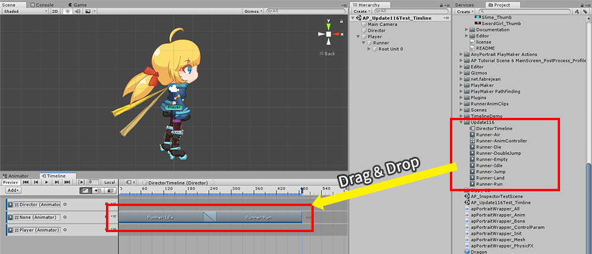
트랙과 연동이 되었다면 이제 애니메이션 클립을 타임라인에 배치해봅시다.
메카님 설정을 켜고 Bake를 했다면 애니메이션이 Animation Clip Asset으로 저장됩니다.
트랙에 이 애니메이션 클립들을 드래그하여 배치하면 됩니다.
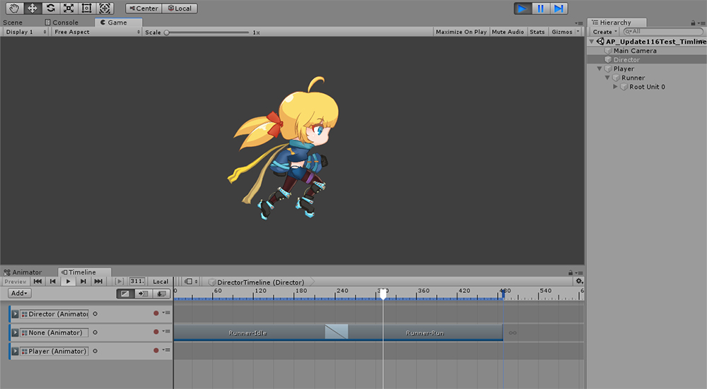
게임을 실행하면 타임라인이 재생되면서 캐릭터의 애니메이션도 같이 순서대로 재생되는 것을 볼 수 있습니다.
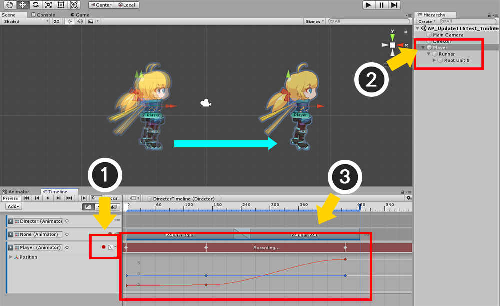
캐릭터를 실제로 움직이고 싶다면, 부모 GameObject가 등록된 다른 트랙에서 애니메이션을 만들어야 합니다.
(1) 트랙의 녹화 버튼을 누릅니다.
(2) 부모 GameObject인 "Player"를 선택합니다.
(3) 프레임에 맞게 각각 위치를 이동하여 키프레임들을 생성합니다.
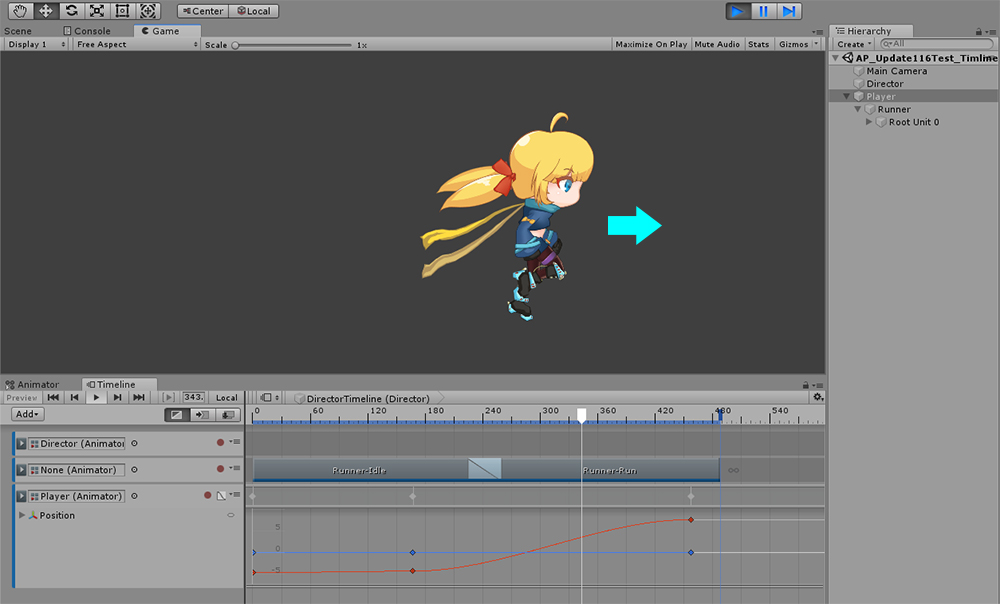
다시 게임을 실행하면, 캐릭터가 앞으로 이동하면서 애니메이션이 실행됩니다.
에디터에서 타임라인 미리보기
이 단계까지 완료되었다면 게임 중에 타임라인에 따라서 애니메이션이 실행되는 것을 볼 수 있습니다.
그렇지만 게임이 실행 중이 아닐 때에는 타임라인이 재생되더라도 AnyPortrait의 캐릭터의 애니메이션이 재생되지 않습니다.
AnyPortrait는 에디터에서 자동으로 업데이트가 되지 않으며, 별도의 입력이 있는 경우에만 메시가 갱신되기 때문입니다.
이를 위해서 게임이 실행 중이 아닐 때에도 타임라인에 의해 재생되도록 별도의 스크립트가 v1.1.6부터 제공됩니다.
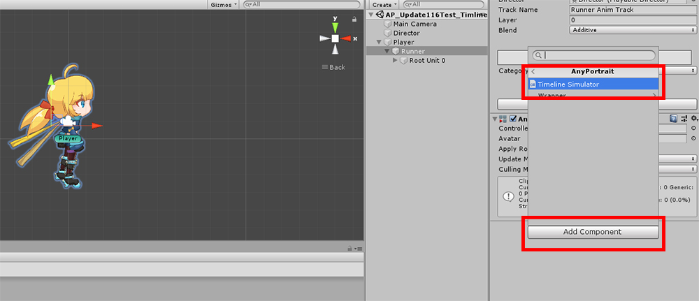
apPortrait가 있는 AnyPortrait의 캐릭터를 선택하고 Add Component 버튼을 누릅니다.
AnyPortrait > Timeline Simulator를 선택합니다.

타임라인 시뮬레이터(apAnimPlayTimelineSimulator)가 컴포넌트로 추가되었습니다.
(1) 작업 중인 Playable Director를 연결합니다.
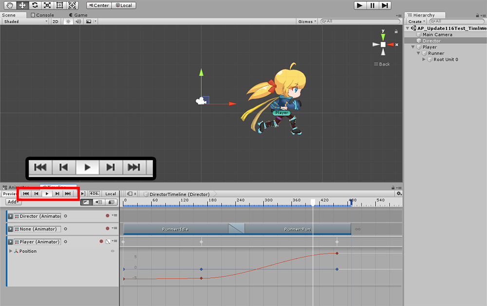
타임라인을 편집하는 도중에도 캐릭터의 애니메이션이 제대로 실행되는 것을 볼 수 있습니다.
타임라인 시뮬레이터의 속성 및 주의할 점
- Simulate를 켜면 타임라인이 재생될 때 같이 연동되어 재생되며, 반대로 Simulate를 끄면 타임라인의 제어를 받지 않습니다.
- 애니메이션 클립을 추가하거나 제거할 때 Refresh Tracks 버튼을 눌러야 갱신된 트랙 정보가 정상적으로 인식이 됩니다.
- 타임라인 시뮬레이터는 타임라인 편집 중에만 동작하며, 게임이 실행되면 동작하지 않습니다.
- 타임라인이 완성되면 타임라인 시뮬레이터 컴포넌트를 삭제하는 것을 권장합니다.
트랙에서의 애니메이션 클립 정보와 완성된 타임라인 시퀸스
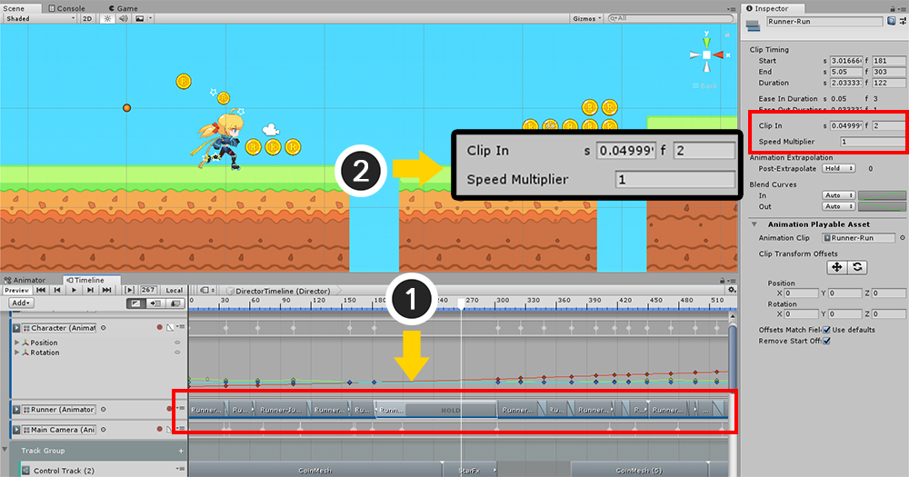
타임라인 트랙에 배치된 애니메이션 클립의 속성을 Inspector 화면에서 수정할 수 있습니다.
AnyPortrait는 "Clip In", "Speed Multiplier" 속성값을 애니메이션 재생에 반영합니다.
- Clip In을 변경하여 애니메이션의 시작 시점을 변경할 수 있습니다.
- Speed Multiplier를 변경하여 애니메이션의 재생 속도를 제어할 수 있습니다.